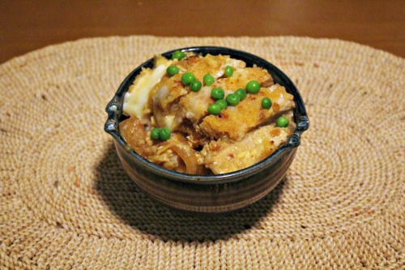

Katsudon - Yuri!!! on Ice
You might not want to be a pork cutlet, but with this recipe you can totally eat a pork cutlet! And, really, what could be more desirable than a steaming bowl of rice, breaded pork cutlet, onions, and egg. Funnily enough, katsu and the word for victory are pronounced the same in Japanese (カツ and 勝つ, respectively), so athletes will often eat some katsudon before or after they compete.
So, in honor if Yuri Katsuki’s birthday, make some tasty katsudon!
Ingredients:
- 3 cups cooked rice
- 2 boneless pork chops (and a meat mallet)
- Salt and pepper
- Flour for dusting
- 1 egg, beaten, for breading
- 1 cup panko
- 1/2 cup dashi stock (you can use chicken or vegetable stock if you cant get a hold of some dashi or dashi powder)
- 1 Tbsp. soy sauce
- 2 Tbsp. mirin
- 2 tsp. sugar
- 1 small onion, sliced thin
- 2 eggs
- 1/4 cup peas (alternatively, you can top it with scallions/green onions, thinly sliced nori, sesame seeds, whole snowpeas, and any combination of any of these)
Instructions:
- Begin heating up some oil in a deep pan on the stove. About ½” of oil should do. Alternatively, if you have a deep fryer and feel comfortable using it, go ahead a use that for the pork katsu.
- Use a meat mallet to pound the pork to about 1/4 thick.
- Season the pork chops with salt and pepper, and dust them with the flour.
- Dip the pork into the first beaten egg, then coat them with panko crumbs.
- Once the oil is hot (get some water on your hand and flick it into the oil from a safe distance above, if it sizzles and pops, the oil is ready), place the breaded pork into the oil. Fry them until golden brown on each side. Once they’re cooked, remove them from the oil, and set them aside on a plate with some paper towels to absorb the excess oil.
- If you haven't already made your rice, start cooking it now.
- Add the stock, soy sauce, mirin and sugar to a pan (one big enough to hold both pork chops) and bring it to a simmer. Add in the onions and cover the pan with a lid.
- Once the onions are translucent, slice the pork katsu, and carefully (as to keep the slices together, treating them as if it were still a whole cutlet) add it on top of the onions.
- Beat the remaining two eggs and pour them on top of the pork katsu. Cover the pan with the lid.
- Begin portioning the rice into two bowls.
- Once the eggs are done (still kind of jiggly and slimy looking, but definitely not liquid anymore. If you're squeamish about eggs, feel free to cook it a bit longer, but be careful not to allow the egg to become dry and fluffy), pick up the pan and slide/pour the sauce, onions, katsu, and egg onto the rice in the bowl.
- Top with peas or your choice of garnish.
- Reward yourself with this delicious meal. (But only after you win the skating competition, of course.)